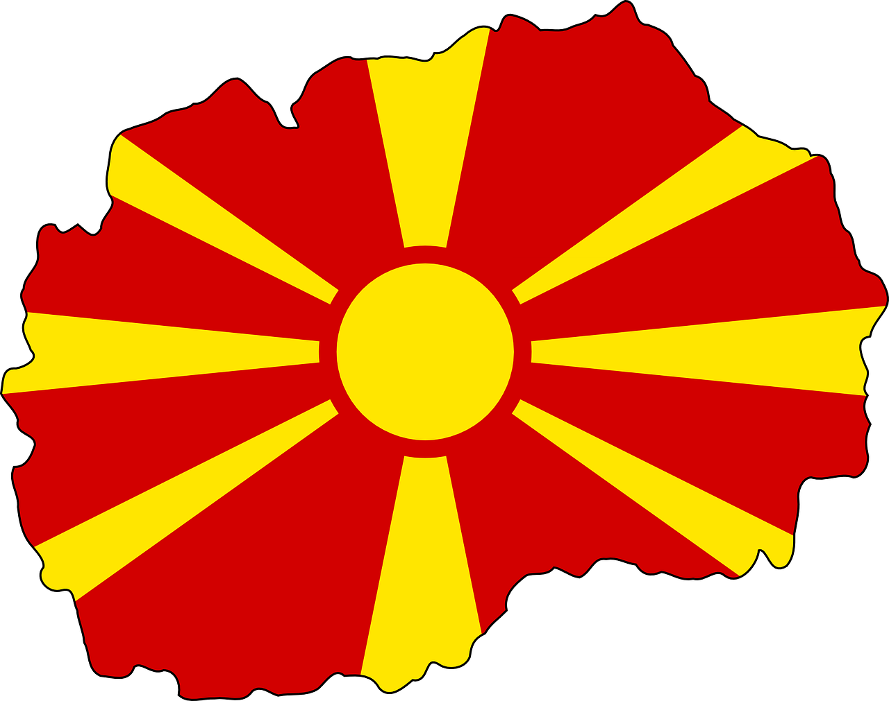

История и култура
| Осоговският манастир „Св. Йоаким Осоговски“, известен още и като Сарандапорски, се намира на около 3 км източно от гр. Крива Паланка, в полите на Осоговската планина, в местността "Бабин дол".Манастирът е част от огромното българско историческо наследство останало в днешна Р. Македония. Осоговската обител е била основана от духовния ученик на Св. Иван Рилски - Яким (Йоаким), който живял в XI-XII век. Родното място на светеца не е известно, но се знае че първо се спрел в село Градец, в дома на тамошния княз. Градец е и днес съществуващо село в Паланешко, през средновековието е било седалище на местната жупа, за което напомнят останките на отдавна разрушена крепост. Князът дал прибежище на чужденеца и му посочил места по Сарандапорската река (Крива река), където може да се установи. Пустиникът си избрал една пещера в местността "Бабин дол" и там прекарал остатъкът от земния си път в пост и молитва. Тази пещера всъщност е първата обител, предхождаща големия манастир, изграден по късно. | |
| През 1689 укрепената Крива паланка е епицентър на Въстание на Петър Карпош, в края на което е опожарена. Църквата „Свети Димитър“ е построена в 1833 г. През 1845 година в Крива паланка е построена нова българска църква, а в двора ѝ българско училище. Според свидетелства на посетили селището през 1859 година американски мисионери, то има 3 хиляди жители, мнозинството от тях българи. През 1868 година официално е създадена Паланечката българска община. В началото на XX век Крива паланка е смесено българо-турско градче в Османската империя. Според статистиката на Васил Кънчов („Македония. Етнография и статистика“) от 1900 г. паланката е населявана от 1500 жители българи християни, 2500 турци, 20 власи и 320 цигани. |